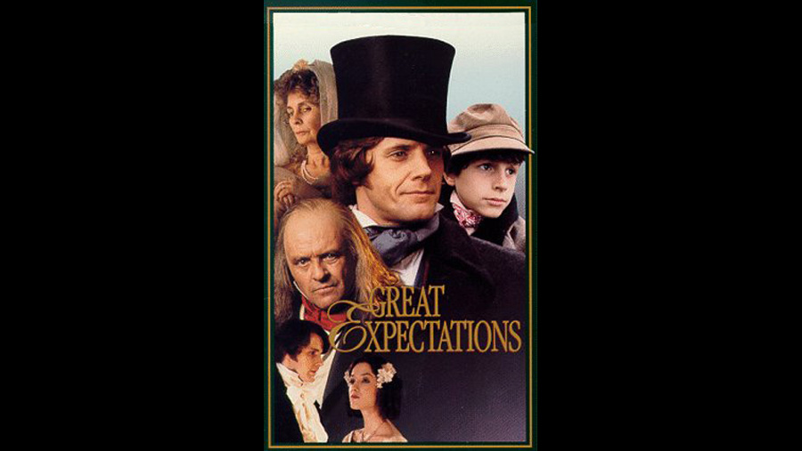

1989

CAST
Abel Magwitch
-
Anthony Hopkins
Young Pip
-
Martin Harvey
Joe Gargery
-
John Rhys-Davies
Mrs Joe
-
Rosemary McHale
Uncle Pumblechook
-
Frank Middlemass
Orlick
-
Niven Boyd
Miss Havisham
-
Jean Simmons
Jaggers
-
Ray McAnally
Philip "Pip" Pirrip
-
Anthony Calf
Estella
-
Kim Thomson
Herbert Pocket
-
Adam Blackwood
Compeyson
-
Sean Arnold
Mr Wopsle
-
John Quentin
Mr Hubble
-
Preston Lockwood
Mrs Hubble
-
Eve Pearce
CREATIVE TEAM
Director
-
Kevin Connor
Screenplay
-
John Goldsmith
FILMING LOCATIONS
Harty Church on the Isle of Sheppey in Kent was used for the moment when young orphan Pip, whilst visiting his parents' grave, meets the escaped convict, Abel Magwitch. Upnor Village was used as the home of Herbert Pocket's fiancée Clara's house. Upnor Lighthouse is visible as Pip docks in the village.